쇼케이스 이용 및 관리
꽃냉장고 음료수냉장고 차이, 바람과 습도에서 갈립니다
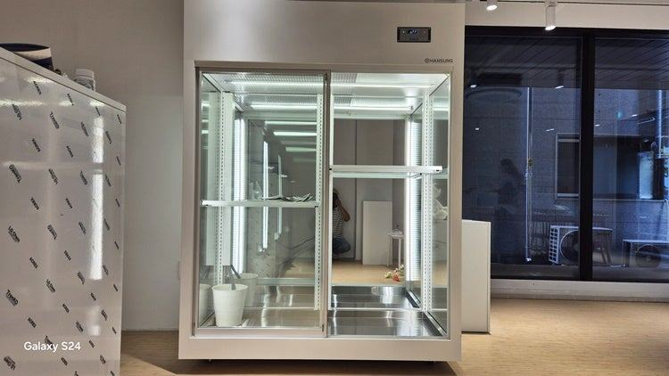
음료수냉장고는 캔과 병을 빨리 식히려고 찬 바람을 앞쪽으로 세게 보내고 내부를 건조하게 유지하는 반면, 꽃냉장고는 바람을 벽면으로 돌려 꽃에 직접 닿지 않게 하고 습도를 높게 지킵니다. 생화를 며칠씩 보관하는 꽃집이라면 이 차이 때문에 전용 냉장고를 쓰시는 편이 폐기를 줄이는 길입니다.
안녕하세요. 생화 보관용 쇼케이스를 설계하고 제작하는 한성쇼케이스입니다.
꽃집을 처음 여시는 사장님들께서 자주 물으시는 게 있습니다. "유리문 달린 냉장고는 다 비슷해 보이는데, 음료수 냉장고를 꽃냉장고로 써도 되지 않나요?"
겉으로 보면 투명한 문, 선반, 조명까지 거의 같으니 그런 생각이 드는 게 당연합니다. 하지만 안에서 바람이 어떻게 도는지, 공기가 얼마나 촉촉한지를 보면 두 장비는 목적부터 다릅니다.
오늘은 두 냉장고가 실제로 어디서 다른지, 그리고 꽃냉장고를 쓸 때 계절마다 무엇을 조정해야 하는지 차근차근 짚어 보겠습니다.
1. 바람이 닿는 방향이 다릅니다
음료수 냉장고의 목표는 넣자마자 시원하게 만드는 것입니다. 그래서 찬 바람을 진열 상품 쪽으로 직접 강하게 보내는 방식을 씁니다.
캔이나 병에게는 그게 장점이지만, 꽃잎에게는 계속 선풍기를 쐬는 것과 비슷합니다.
꽃냉장고는 바람을 벽면으로 우회시켜 내부 공기 전체를 천천히 식힙니다. 꽃이 직접 바람을 맞지 않으니 꽃잎 가장자리가 마르거나 잎끝이 타들어 가는 일이 줄어듭니다.
선반 구조도 다릅니다. 음료수 냉장고는 병을 눕히거나 줄 세우기 좋게 칸이 촘촘한 반면, 꽃냉장고는 버킷을 바닥에 세우고 줄기 긴 꽃이 꺾이지 않도록 내부 높이를 넉넉히 둡니다.
2. 내부 습도가 다릅니다
음료수 냉장고는 결로를 막기 위해 내부를 건조하게 유지합니다. 일반적으로 음료수 냉장고는 습도 약 40~50%, 꽃 전용 냉장고는 약 80~90%로 운용됩니다.
건조한 공기 속에서 생화는 줄기와 꽃잎의 수분을 빠르게 잃습니다. 장미 겉잎이 바삭해지거나 리시안셔스 꽃잎 끝이 말려 들어간다면 습도가 맞지 않는다는 신호일 수 있습니다.
- 꽃잎 가장자리가 마르는지 매일 확인해 보세요.
- 버킷 물이 평소보다 빨리 줄어드는지 보세요.
- 잎끝이 갈색으로 변하는 꽃이 늘면 보관 환경부터 점검하세요.
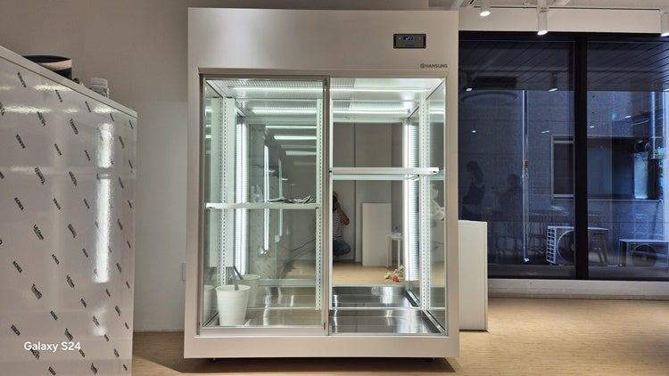
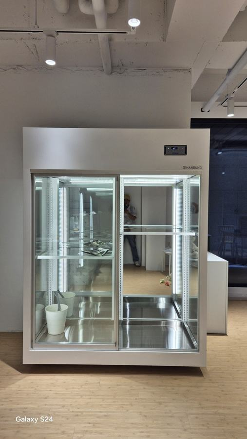
3. 온도 기준도 꽃에 맞춰야 합니다
장미, 카네이션, 리시안셔스 같은 대중적인 절화는 5°C에서 8°C 구간에서 상태가 오래 갑니다. 이 구간에서는 개화 속도가 늦춰져 판매할 수 있는 기간이 길어집니다.
다만 극락조나 아열대성 난초류처럼 따뜻한 곳에서 자란 꽃은 10°C 아래에서 잎이 거뭇해지는 냉해를 입기 쉽습니다.
이런 꽃은 10°C~15°C 정도의 실온이나 문 근처처럼 찬 기운이 덜 닿는 자리에 따로 두시는 게 안전합니다.
4. 계절별 조정과 유리 결로
여름에는 문을 열 때마다 더운 공기가 들어오니 평소 설정보다 1°C 정도 낮추고, 겨울에는 반대로 1°C 정도 높여 주는 식으로 조금씩 움직여 주세요.
여름철 유리 겉면에 물방울이 맺히는 건 바깥의 덥고 습한 공기가 차가운 유리를 만나 생기는 정상적인 현상입니다.
그대로 두면 바닥에 물이 고이거나 곰팡이가 생길 수 있으니 에어컨이나 제습기로 매장 습도를 낮추고, 물기는 마른 천으로 가볍게 닦아 주시면 됩니다.
- 여름엔 설정 온도를 1°C 정도 낮춰 보세요.
- 겨울엔 1°C 정도 높여 냉해를 막으세요.
- 결로가 심하면 매장 제습부터 해 보세요.
체크리스트
- 바람이 꽃에 직접 닿는 구조인지
- 내부 습도를 높게 유지할 수 있는지
- 일반 절화와 열대 꽃의 보관 위치 구분
- 계절별 설정 온도 조정 계획
- 결로 대비 매장 제습 여부
현장에서 자주 보는 경우: 음료수 냉장고로 시작했다가 폐기가 늘 때
창업할 때 지출을 줄이려고 비교적 저렴한 음료수 쇼케이스를 들여놓는 꽃집이 적지 않습니다. 안이 훤히 보이는 구조가 꽃냉장고와 비슷해 보이니 쉽게 선택하시는데, 몇 주 지나면 들여온 지 며칠 안 된 꽃이 먼저 시든다는 상담 전화를 주십니다.
매장에 가 보면 찬 바람이 앞쪽 꽃에 그대로 닿고, 내부가 건조해 꽃잎이 말라 있는 경우가 대부분입니다.
처음 장비 비용을 아끼려다 폐기되는 꽃이 늘어나면 오히려 손해가 커지기 때문에, 생화를 주력으로 하신다면 온도와 습도를 세밀하게 잡을 수 있는 전용 장비를 권해 드립니다.
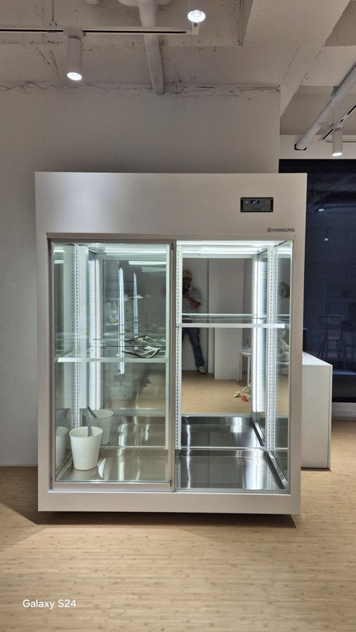
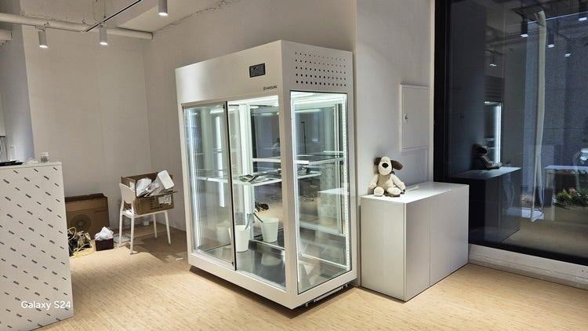
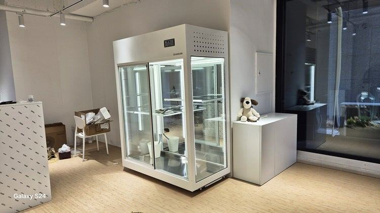
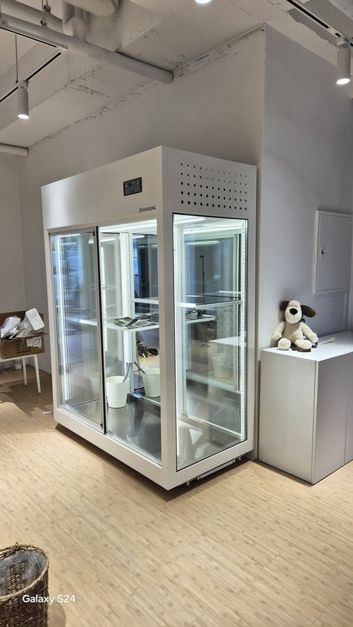
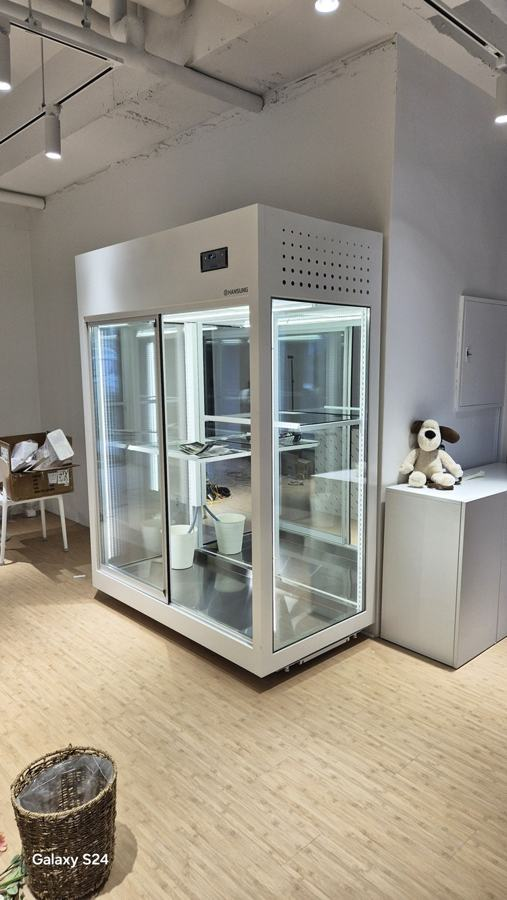
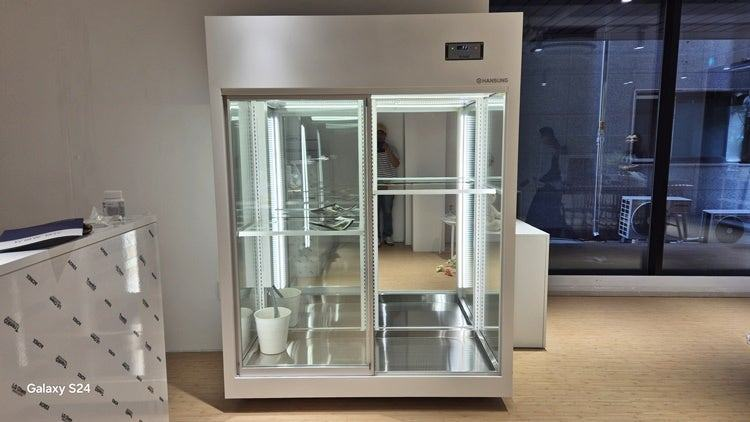
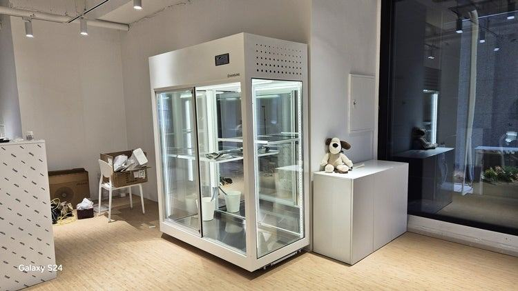
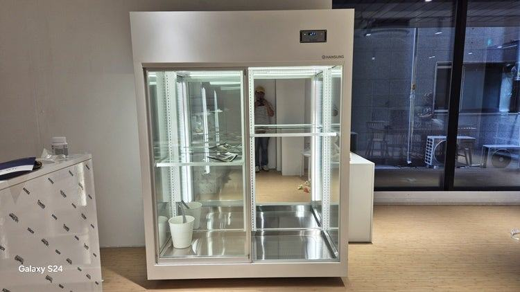
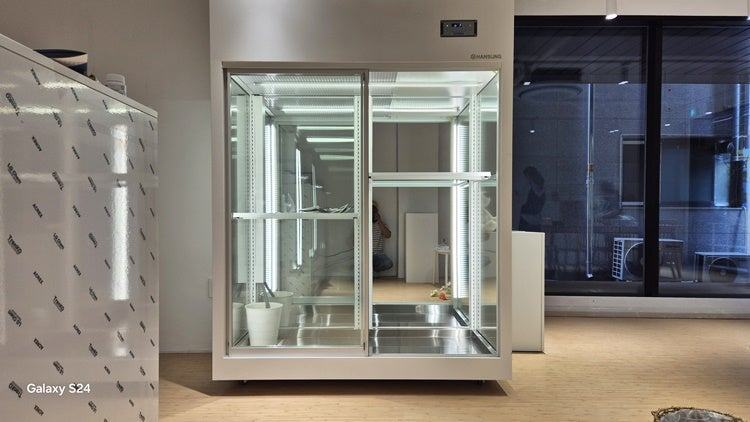

| 구분 | 음료수 냉장고 | 꽃 전용 냉장고 |
|---|---|---|
| 냉각 방식 | 강한 찬 바람을 전면에 직접 쏘는 직냉식 | 바람을 벽면으로 우회시키는 간접 냉각 |
| 적정 습도 | 약 40% ~ 50% (건조함 유지) | 약 80% ~ 90% (고습도 유지) |
| 꽃에 미치는 영향 | 꽃잎의 수분을 앗아가 금방 시들어 감 | 수분 증발을 막아 생화 생명력 연장 |
| 핵심 목적 | 캔이나 병 음료를 빠르게 냉각 | 화의 신선도 보존 및 호흡 제어 |
자주 묻는 질문
음료수 냉장고에 꽃을 잠깐만 넣어 두는 것도 안 되나요?
당일 판매할 꽃을 몇 시간 두는 정도라면 큰 문제가 없을 수 있습니다. 며칠씩 보관하는 구조라면 바람과 건조함 때문에 꽃잎이 빨리 마르니 전용 장비를 권해 드립니다.
꽃냉장고 한 대에 난초와 장미를 같이 넣어도 되나요?
보관 온도가 달라 함께 두면 어느 한쪽이 손해를 봅니다. 난초류처럼 냉해에 약한 꽃은 문 근처나 따로 마련한 공간에 두시는 게 좋습니다.
유리에 물방울이 맺히면 고장인가요?
여름철 바깥 공기가 덥고 습할 때 생기는 정상적인 현상인 경우가 많습니다. 매장 습도를 낮추고 물기를 닦아 주시고, 그래도 계속되면 점검을 요청해 주세요.
매장 조건에 맞춰 만드는 한성쇼케이스
원하시는 제품 사진과 설치할 공간 사진만 보내 주셔도 매장에 맞는 구성을 추천해 드립니다.
- 전국 240여 개 A/S 전담 센터 운영
- 본사 대량 자재 매입으로 품질 대비 합리적인 가격
- 유럽제·삼성 냉각 콤프레셔 적용
- 국내 최초 쇼케이스 전문 디자이너 상주
매장 폭과 원하는 진열 구성을 알려 주세요. 실측과 견적을 안내해 드립니다.
031-986-2458